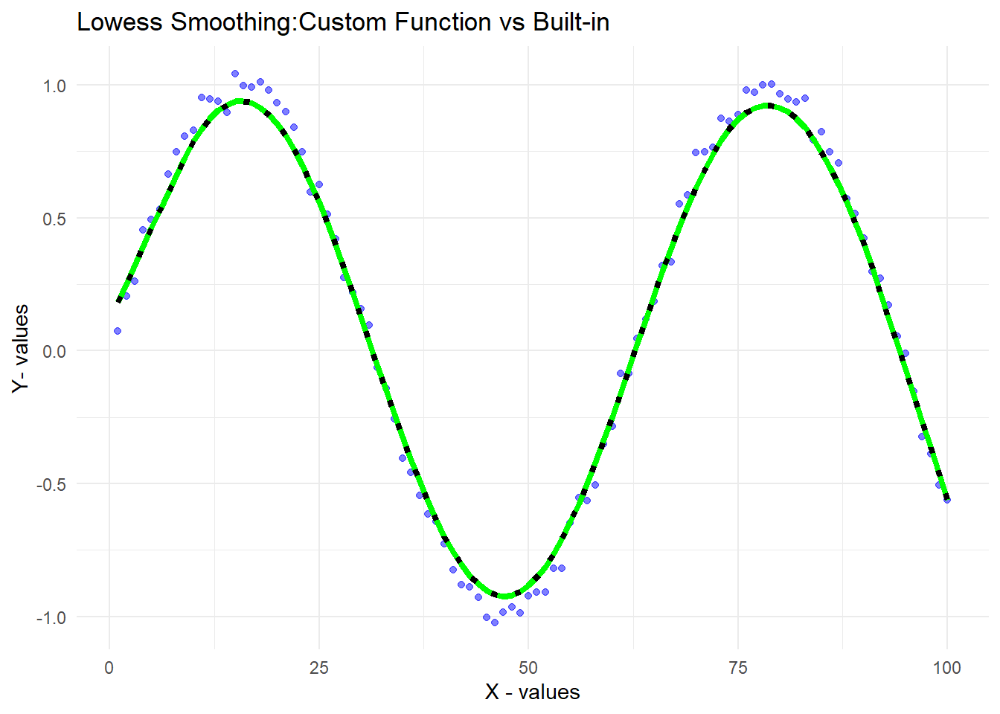

set.seed(1)
simDataX<- seq(1:100)
e<- rnorm(length(simDataX), mean = 0, sd = 0.04)
simDataY<-sin(simDataX/10)+e3 Practical 2
3.0.1 1. Generate a simulated data set
3.0.2 2. Implement the LOWESS Algorithm:
#Define the Span
f <- 0.2 #Choose a 20% span
n<-length(simDataX)
k <- ceiling(f * n) #Number of nearest neighbors
y_smooth <- numeric(n)
customLowess<-function(x,y,f){
#Define function for one point
smooth_1P<- function(i) {
dists<- abs(x - x[i])
neighbors<- order(dists)[1:k]
dmax<- max(dists[neighbors])
#Compute tricube weights
w <- (1 - (dists[neighbors] / dmax)^3)^3
w[dists[neighbors] >= dmax] <- 0
#Weighted Linear Regression
X <- cbind(1, x[neighbors])
W <- diag(w)
y_res <- y[neighbors] # Response variable
beta <- solve(t(X) %*% W %*% X) %*% (t(X) %*% W %*% y_res)
return(beta[1] + beta[2] * x[i])
}
# Apply vectorized function to all x values
y_smooth <- sapply(1:n, smooth_1P)
return(y_smooth)
}
y_smooth_vect<- customLowess(simDataX,simDataY, f)
y_smooth_vect [1] 0.18156204 0.25324211 0.32375467 0.39310941 0.46138555 0.52865829
[7] 0.59500784 0.66056615 0.72547119 0.78892829 0.83496435 0.87324751
[13] 0.90340117 0.92496841 0.93699791 0.93887669 0.93101212 0.91389870
[19] 0.88784818 0.85292454 0.80934837 0.75733300 0.69743246 0.63040476
[25] 0.55729827 0.47871720 0.39522199 0.30774177 0.21729688 0.12517210
[31] 0.03279568 -0.05891801 -0.14965153 -0.23895329 -0.32588952 -0.40995477
[37] -0.49076577 -0.56750469 -0.63858088 -0.70249146 -0.75851920 -0.80642759
[43] -0.84616413 -0.87796929 -0.90188856 -0.91762080 -0.92423451 -0.92074410
[49] -0.90715484 -0.88426414 -0.85264129 -0.81253466 -0.76394783 -0.70755433
[55] -0.64413615 -0.57426196 -0.49866653 -0.41841692 -0.33471463 -0.24799685
[61] -0.15877462 -0.06733956 0.02557605 0.11877094 0.21113442 0.30083030
[67] 0.38613386 0.46658789 0.54238827 0.61350587 0.67953463 0.73916347
[73] 0.79119661 0.83476976 0.86943928 0.89489246 0.91145656 0.91993541
[79] 0.92064229 0.91335727 0.89745915 0.87258756 0.83874128 0.79629135
[85] 0.74602763 0.68889420 0.62556436 0.55631781 0.48094699 0.39952742
[91] 0.31266491 0.21642182 0.12017931 0.02394371 -0.07250841 -0.16932671
[97] -0.26663166 -0.36449927 -0.46293223 -0.561885383.0.3 3. Compare with built in function
lowessBIn <- lowess(simDataX, simDataY, f = f, iter = 0)
lowessBIn$y [1] 0.18156204 0.25324211 0.32375467 0.39310941 0.46138555 0.52865829
[7] 0.59500784 0.66056615 0.72547119 0.78892829 0.83496435 0.87324751
[13] 0.90340117 0.92496841 0.93699791 0.93887669 0.93101212 0.91389870
[19] 0.88784818 0.85292454 0.80934837 0.75733300 0.69743246 0.63040476
[25] 0.55729827 0.47871720 0.39522199 0.30774177 0.21729688 0.12517210
[31] 0.03279568 -0.05891801 -0.14965153 -0.23895329 -0.32588952 -0.40995477
[37] -0.49076577 -0.56750469 -0.63858088 -0.70249146 -0.75851920 -0.80642759
[43] -0.84616413 -0.87796929 -0.90188856 -0.91762080 -0.92423451 -0.92074410
[49] -0.90715484 -0.88426414 -0.85264129 -0.81253466 -0.76394783 -0.70755433
[55] -0.64413615 -0.57426196 -0.49866653 -0.41841692 -0.33471463 -0.24799685
[61] -0.15877462 -0.06733956 0.02557605 0.11877094 0.21113442 0.30083030
[67] 0.38613386 0.46658789 0.54238827 0.61350587 0.67953463 0.73916347
[73] 0.79119661 0.83476976 0.86943928 0.89489246 0.91145656 0.91993541
[79] 0.92064229 0.91335727 0.89745915 0.87258756 0.83874128 0.79629135
[85] 0.74602763 0.68889420 0.62556436 0.55631781 0.48094699 0.39952742
[91] 0.31266491 0.21642182 0.12017931 0.02394371 -0.07250841 -0.16932671
[97] -0.26663166 -0.36449927 -0.46293223 -0.56188538library(ggplot2)
ggplot() +
geom_point(aes(simDataX, simDataY), color = "blue", alpha = 0.5) +
geom_line(aes(simDataX, y_smooth_vect), color = "green", lwd = 1.5, label = "Custom Function") +
geom_line(aes(lowessBIn$x, lowessBIn$y), color = "black", lwd = 1.5, linetype = "dotted", label = "Built-in LOWESS") +
labs(title = "Lowess Smoothing:Custom Function vs Built-in",
x = "X - values", y = "Y- values") +
theme_minimal()Warning in geom_line(aes(simDataX, y_smooth_vect), color = "green", lwd = 1.5,
: Ignoring unknown parameters: `label`Warning in geom_line(aes(lowessBIn$x, lowessBIn$y), color = "black", lwd = 1.5,
: Ignoring unknown parameters: `label`